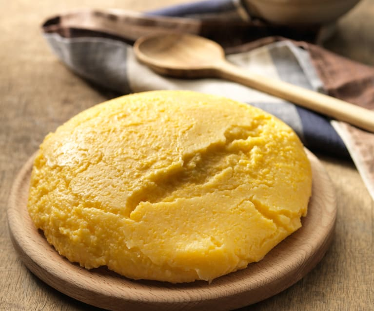

Polenta

Description
A delicious and traditional Italian dish from Northern Italy made with corn and served in a wooden cutting board
Ingredients
- 2 l water
- 500 g all purpose corn flour
- 1 tbsp olive oil
- 1 tbsp coarse salt
Steps
- Place the salted water in a pot over a high flame. Add the olive oil and pour in the corn flour slowly to avoid clumping.
- With a wooden spoon, begin stirring, bringing the bottom layer to the top and vice versa.
- If the mixture seems too thick, add a bit more warm water. After about 40 minutes of cooking and stirring, the polenta should begin unsticking from the edges of the pot, which means that it’s already ready to be eaten, but polenta is best enjoyed when well-cooked, so cook it for 20 minutes longer.
- Once done, serve it on a traditional wooden cutting board, sliced, or on a plate that’s been warmed in the oven.
Back to main page